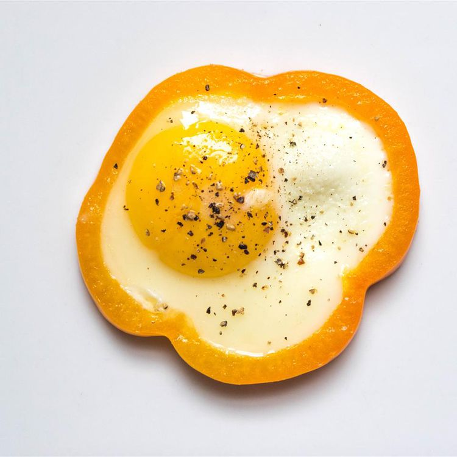

Egg in a Pepper

Description
This egg in a pepper recipe is paleo and a super easy way to eat your eggs! You can also top it with cheese or even a slice of bread.
Ingredients
- 1 large egg
- 1 (1/4-inch thick) ring bell pepper
- salt and ground black pepper to taste
Steps
- Heat a nonstick skillet over medium heat
- Add bell pepper ring
- Crack egg into bell pepper ring; cook until bottom holds together and corners are browned, 2 to 3 minutes
- Flip; cook until desired doneness is reached, 2 to 3 minutes more
- Season with salt and ground black pepper